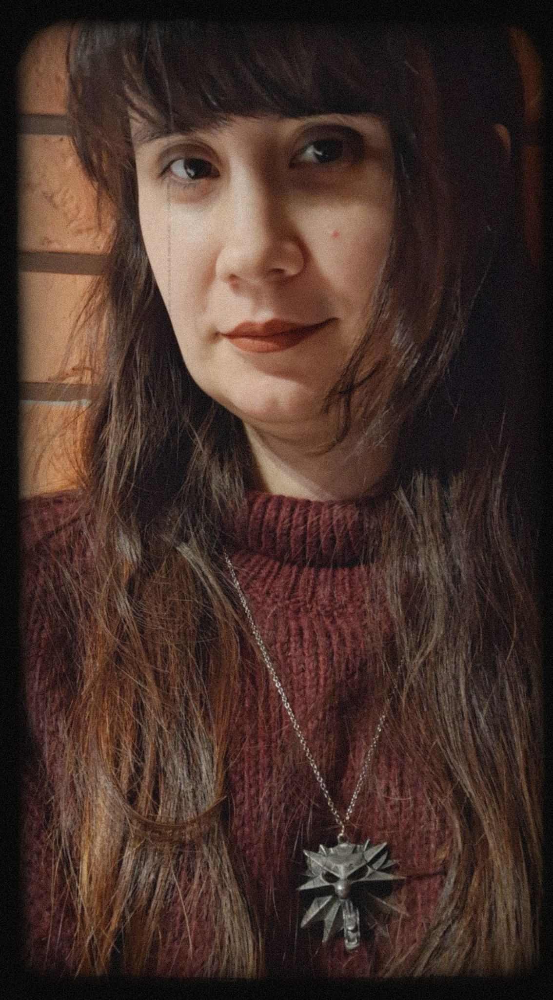

Ewelina Filipiak - A graduate of a technical university in Computer Science, specializing in Mobile and Web Technologies.
She also completed a technical secondary school in tourism. As her engineering thesis project, she developed a game titled “Last Travel Agency.”
She is passionate about exploring worlds created in games such as The Witcher 3 (especially Toussaint from the Blood and Wine expansion),
Outriders (notably the icy caves), and Layers of Fear (particularly its constantly shifting corridors).
Her goal is to become a Level Designer in order to create her own immersive worlds.